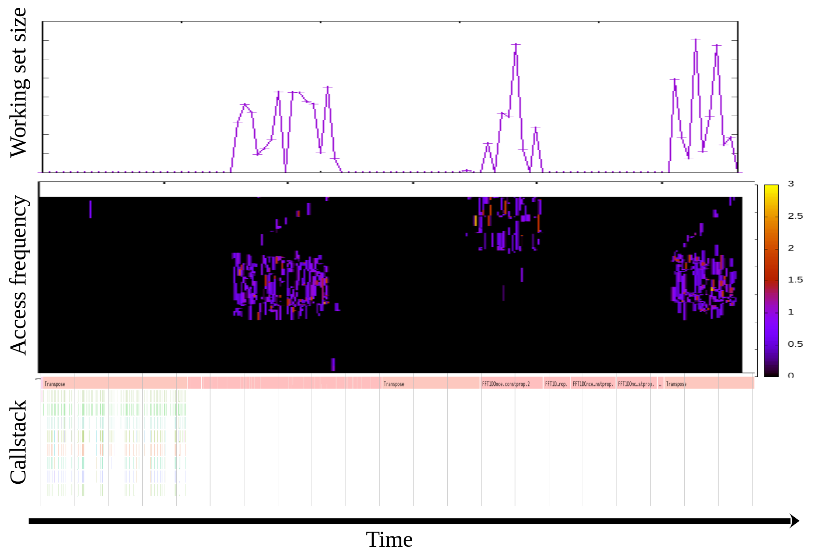

I realized I didn't introduce a good, intuitive example use case of DAMON[0]
for profiling so far, though DAMON is not for only profiling. One
straightforward and realistic usage of DAMON as a profiling tool would be
recording the monitoring results with callstack and visualize those by timeline
together.
For example, below shows that visualization for a realistic workload, namely
'fft' in SPLASH-2X benchmark suite. From that, you can know there are three
memory access bursting phases in the workload and 'FFT1DOnce.cons::prop.2()'
looks responsible for the first and second hot phase, while 'Transpose()' is
responsible for the last one. Now the programmer can take a deep look in the
functions and optimize the code (e.g., adding madvise() or mlock() calls).

We used the approach for 'mlock()'-based optimization of a range of other
realistic benchmark workloads. The optimized versions achieved up to about
2.5x performance improvement under memory pressure[1].
Note: I made the uppermost two figures in above 'fft' visualization (working
set size and access frequency of each memory region by time) via the DAMON user
space tool[2], while the lowermost one (callstack by time) is made using perf
and speedscope[3]. We have no descent and totally automated tool for that yet
(will be implemented soon, maybe under perf as a perf-script[4]), but you could
reproduce that with below commands.
$ # run the workload
$ sudo damo record $(pidof ) &
$ sudo perf record -g $(pidof )
$ # after your workload finished (you should also finish perf on your own)
$ damo report wss --sortby time --plot wss.pdf
$ damo report heats --heatmap freq.pdf
$ sudo perf script | speedscope -
$ # open wss.pdf and freq.pdf with our favorite pdf viewer
[0] https://damonitor.github.io
[1] https://linuxplumbersconf.org/event/4/contributions/548/attachments/311/590/damon_ksummit19.pdf
[2] https://lore.kernel.org/linux-mm/20201215115448.25633-8-sjpark@amazon.com/
[3] https://www.speedscope.app/
[4] https://lore.kernel.org/linux-mm/20210107120729.22328-1-sjpark@amazon.com/